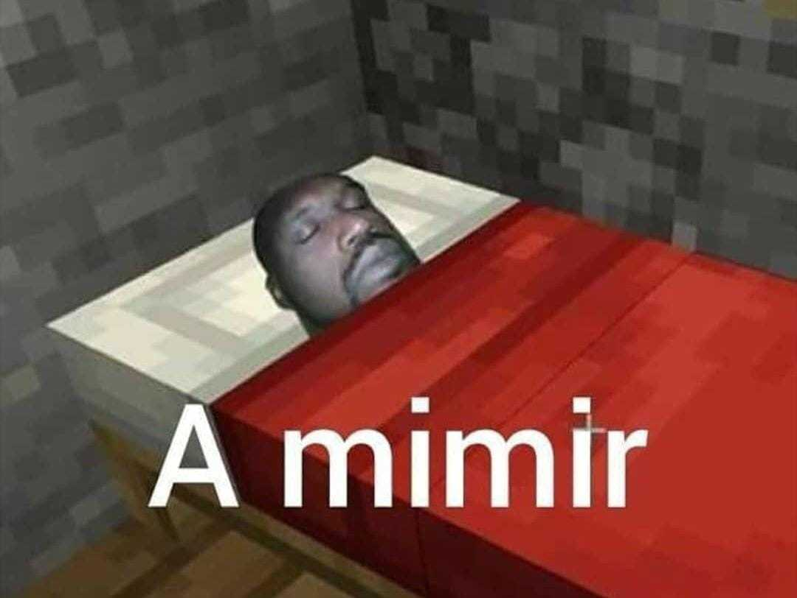

You go to your tent and sleep after a hard day of work.

When you wake up the next morning, you learn that a battalion was sent into the portal and found a demon city.
You are then tasked to help setting up the camp on the other side.
You go through the portal and enter the empty city.
There is blood on the streets, evidence that a battle took place here.
When you ask why to another soldier, he tells not to worry, for that they cleansed the city of demons.
You don't feel like moving boxes around, and so you decide to go for a walk in the city.
From where you are, two buildings stand out : a cathedral, deeper in the city, and what seems like the city hall.